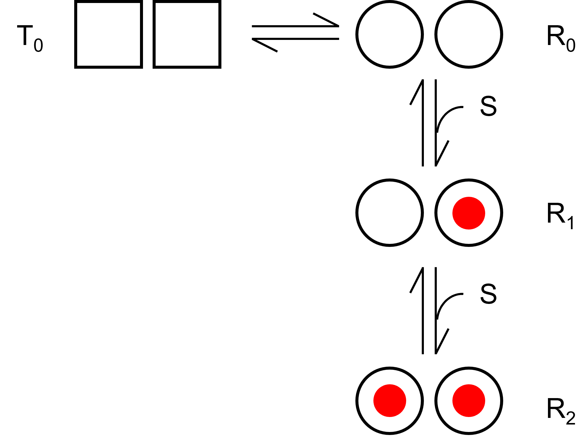

アロステリックモデル再考-01
アロステリックモデルに関しては，以前にもここで説明しましたが，再度検討してみたいと思います．
さらには，MWCモデルにまで拡張していきたいと思います．
まずは前回と同様に，ストライヤーの生化学，を参考にして計算していこうと思います．
n=2，の場合

まずはT状態とR状態を遷移するモデルを考え，基質SはR状態のみに結合すると考えましょう．
また，モデルには2つの結合サイトがあるとします．
TとR
TとRは平衡状態にあり，その割合Lは，
\( \Large L= \frac{T_0}{R_0} \)
と書けます．
解離定数，KR
ここで，R状態の基質Sに対する解離定数，KRは，
\( \Large K_R= \frac{2 R_0 S}{R_1} = \frac{ R_1 S}{2 R_2}\)
となります．それぞれの分子・分母に２がついている理由は，R1には２状態があるためです，つまり，
\( \Large \ce{R_{10} <=>C[k_-][k_+ S ] R_0 <=>C[k_+ S ][k_-] R_{01}} \)
となるので，
\( \Large \frac{d R_0}{dt} = -2 k_+ R_0 S + k_- ( R_{10} + R_{01}) =-2 k_+ R_0 S + k_- S R_1 \)
平衡状態では，
\( \Large 2 k_+ R_0 S = k_- R_1 \)
\( \Large K_R = \frac{k_-}{k_+} = \frac{2 R_0 S}{ R_1} \)
同様に，
\( \Large \ce{R_{10} <=>C[k_+ S][k_- ] R_2 <=>C[k_- ][k_+ S] R_{01}} \)
となるので，
\( \Large \frac{d R_2}{dt} = -2 k_- R_2S + k_+ S( R_{10} + R_{01}) =-2 k_- R_2 S + k_+ R_1 \)
平衡状態では，
\( \Large 2 k_- R_2 = k_+ S R_1 \)
\( \Large K_R = \frac{k_-}{k_+} = \frac{ R_1 S}{2 R_2} \)
となります．
R1，R2
R1，R2は，
\( \Large R_1 = \frac{2 S}{K_R} R_0 \)
\( \Large R_2 = \frac{S}{2 K_R} R_1 = \frac{S^2}{K_R^2} R_0 \)
４状態の結合サイトの総数
４状態の結合サイトの総数は，各状態に２つずつ結合サイトがありますので，
\( \Large \begin{eqnarray} \Large 2( T_0 + R_0 + R_1 +R_2) &=& 2(L R_0 + R_0 + \frac{2 S}{K_R} R_0 + \frac{S^2}{K_R^2} R_0) \\
&=&
2 R_0 \left[ L + 1 + \frac{2 S}{K_R} + \frac{S^2}{K_R^2} \right] \\
&=&
2 R_0 \left[ L + \left( 1 + \frac{ S}{K_R} \right)^2 \right] \\
\end{eqnarray} \)
となります．
基質Sが結合している数
基質Sが結合している数は，
\( \Large \begin{eqnarray} \Large R_1 +2 R_2 &=& \frac{2 S}{K_R} R_0 + 2 \frac{S^2}{K_R^2} R_0 \\
&=&
2 R_0 \left[ \frac{ S}{K_R} + \frac{S^2}{K_R^2} \right] \\
&=&
2 R_0 \frac{ S}{K_R} \left[ 1 + \frac{S}{K_R} \right] \\
\end{eqnarray} \)
基質飽和度
基質飽和度，Yは，
\( \Large \begin{eqnarray} Y &=& \frac{R_1 +2 R_2}{2( T_0 + R_0 + R_1 +R_2)} \\
&=&
\frac{ 2 R_0 \frac{ S}{K_R} \left( 1 + \frac{S}{K_R} \right)}{2 R_0 \left[ L + \left( 1 + \frac{ S}{K_R} \right)^2 \right])} \\
&=&
\frac{ \frac{ S}{K_R} \left( 1 + \frac{S}{K_R} \right)}{ L + \left( 1 + \frac{ S}{K_R} \right)^2 } \\
\end{eqnarray} \)
となります．
ここで，気になる点は，
解離定数，K，は単純な二状態でなくても上記のように書けるの？
という疑問がわきました．そこで，計算してみました（ここです）
次のページに，n=3，の場合についての計算を行います．